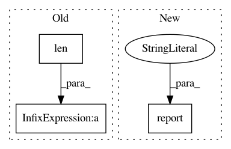

6aad1de658a933d3fa376f7fe9abf419da8a8bd2,python/baseline/dy/lm/train.py,LanguageModelTrainerDynet,test,#LanguageModelTrainerDynet#Any#Any#Any#,61
Before Change
total_loss += loss_val
if initial_state is not None:
initial_state = [x.npvalue() for x in initial_state]
iters += len(y)
if phase == "Valid":
self.valid_epochs += 1
output = self.valid_epochs
else:
output = 0
self.log.debug({"phase": phase, "time": time.time() - start})
metrics["avg_loss"] = total_loss / iters
metrics["perplexity"] = np.exp(total_loss / iters)
for reporting in reporting_fns:
reporting(metrics, output, phase)
return metrics
After Change
epochs = self.valid_epochs
metrics = self.calc_metrics(total_loss, total_toks)
self.report(
epochs, metrics, start,
phase, "EPOCH", reporting_fns
)
return metrics
@register_training_func("lm")
In pattern: SUPERPATTERN
Frequency: 3
Non-data size: 3
Instances
Project Name: dpressel/mead-baseline
Commit Name: 6aad1de658a933d3fa376f7fe9abf419da8a8bd2
Time: 2018-11-26
Author: blester125@users.noreply.github.com
File Name: python/baseline/dy/lm/train.py
Class Name: LanguageModelTrainerDynet
Method Name: test
Project Name: dpressel/mead-baseline
Commit Name: 6aad1de658a933d3fa376f7fe9abf419da8a8bd2
Time: 2018-11-26
Author: blester125@users.noreply.github.com
File Name: python/baseline/tf/seq2seq/train.py
Class Name: Seq2SeqTrainerTf
Method Name: test
Project Name: dpressel/mead-baseline
Commit Name: 6aad1de658a933d3fa376f7fe9abf419da8a8bd2
Time: 2018-11-26
Author: blester125@users.noreply.github.com
File Name: python/baseline/train.py
Class Name: EpochReportingTrainer
Method Name: train